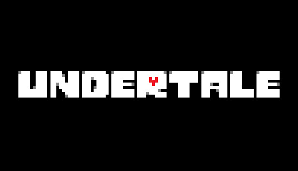
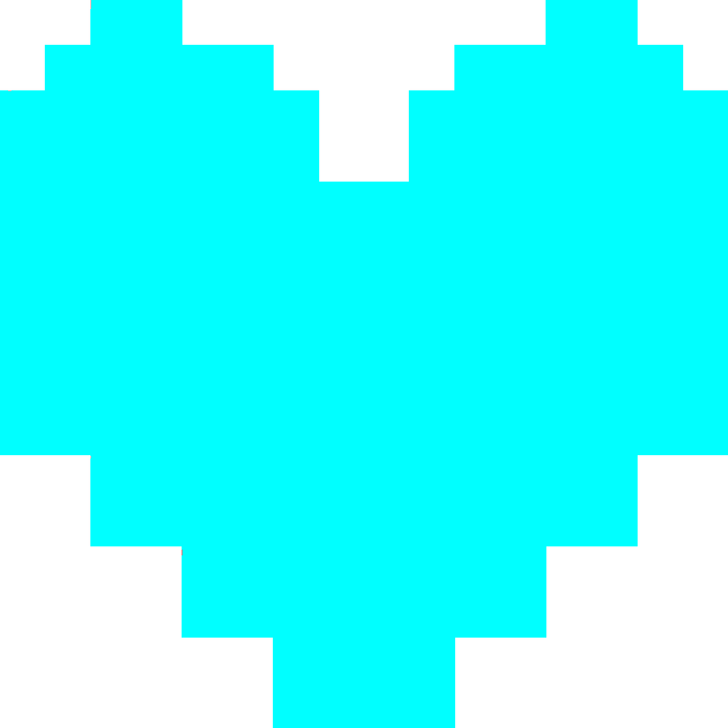
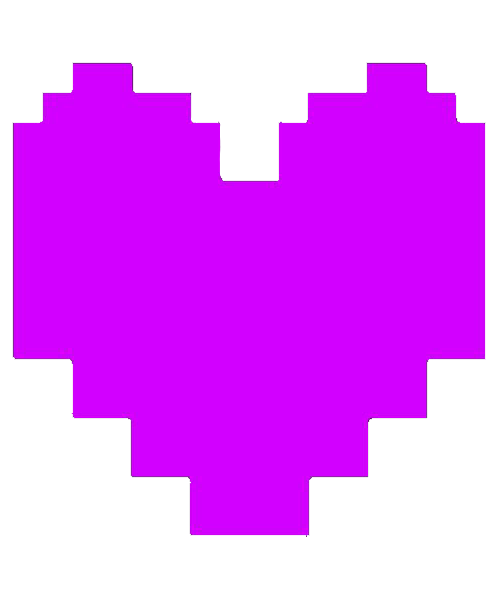
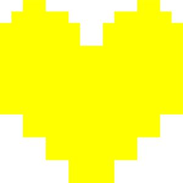
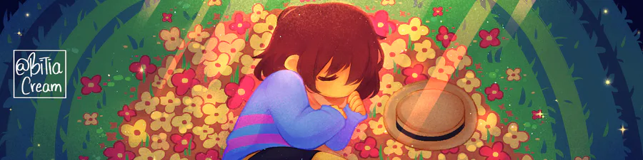

для лучшего прочтения включите "версия для пк"! сайт не совсем адаптирован под другие устройства.
ДУШИ UNDERTALE
разновидности, описания, главный миф

В инди-игре Undertale
существует феномен РАЗНОЦВЕТНЫХ ДУШ.
Цвет каждой души означает какое-либо волевое
качество личности. Такая черта является
доминантной. Всего существует СЕМЬ ЦВЕТОВ ДУШ.
Ниже представлена каждая из них:
Предлагаю рассмотреть каждую из них!

ДУША ТЕРПЕНИЯ
Голубая душа-душа ТЕРПЕНИЯ. Её основной
чертой является способность сохранять спокойствие и
самообладание в трудные моменты. Обладатели
голубой души неконфликтны, спокойные и умеют стоять
перед лицом боли и ожиданий непоколебимо. Также голубой душе свойственна терпимость,
что делает её доброжелательной и уравновешенной в чужих глазах.
ДУША ХРАБРОСТИ
Оранжевая душа-душа ХРАБРОСТИ.
Доминантная черта этой же души-умение
преодолевать страх и действовать
вопреки ему. Не стоит путать смелость
с безрассудством, ведь оранжевая душа
подразумевает именно борьбу со
страхом, а не его отсуствие.
На обладателей оранжевой
души можно положиться в опасных ситуациях. Их
характер воодушевляет, а их умение
взять себя в руки в сложный
момент вдохновляет.
ДУША ЧЕСТНОСТИ
Синяя душа-душа ЧЕСТНОСТИ. Она означает верность принципам,
правдивость и отказ от обмана, даже если бы он понес пользу
обладателю этой души. Прежде всего, это честность перед самим собой, и принятие правды такой, какая она есть, насколько бы горькой она не была. Человек с синей
душой не станет врать о своих действиях
и чувствах, он не будет выдумывать истории или отмазки. Общение с такой
личностью всегда прозрачное, что очень укрепляет доверие.
Фиолетовая душа-душа НАСТОЙЧИВОСТИ. Настойчивость позволяет
уверенно двигаться к цели, несмотря на внешние и внутренние преграды. именно это качество помогает пробовать
из раза в раз, снова и снова, а не опускать руки даже в самые безнадежные и сложные минуты. Обладателей фиолетовой
души точно можно назвать упрямыми; нужно невероятно постараться, чтобы сбить их мотивацию добиться желаемого.
Такие люди не прогибаются под чужими манипуляциями и всегда идут до конца.
ДУША НАСТОЙЧИВОСТИ

ДУША ДОБРОТЫ
Зеленая душа-душа ДОБРОТЫ. Она наполнена бескорыстным стремлением
помогать, заботиться и отдавать себя другим. Безусловно, делать хорошие поступки способен каждый, но зеленая
душа ни в коем случае не будет делать это, ожидая чего-либо взамен. Люди с доброй душой обладают эмпатией и состраданием,
они отличные партнеры и безупречные друзья.
Желтая душа-душа СПРАВЕДЛИВОСТИ. Это понятие о долге,
равноправии и том, что хорошо и должно поощряться, а что плохо и должно наказываться. Желтая душа подразумевает равные условия для всех;
условия, где решения совершаются без предвзятостей, личной выгоды и двойных стандартов. Обладатели этой души способны защитить пострадавшего и слабого и
обладают чрезвычайно сильными принципами.
ДУША СПРАВЕДЛИВОСТИ

И наконец, последняя душа...
ДУША РЕШИМОСТИ
...На самом деле её значение неизвестно.
ЧИТАЙТЕ НИЖЕ!!!

ГЛАВНЫЙ МИФ
Главный мир всего лора касается именно КРАСНОЙ души. В фандоме очень распространено мнение, что КРАСНАЯ душа означает РЕШИТЕЛЬНОСТЬ (DETERMINATION).
Появилось это заблуждение из двух факторов. Во-первых, возможность главного
героя сохраняться и не умирать. Действительно, Фриск обладает неимоверным количеством
РЕШИТЕЛЬНОСТИ, только загвоздка в том, что
этой РЕШИТЕЛЬНОСТЬЮ обладают абсолютно все, от людей до монстров. Единственный нюанс,
что у монстров ее уровень страшно мал, в отличие от людей. Так что РЕШИТЕЛЬНОСТЬ не может быть исключительной
чертой КРАСНОЙ души.
Так чем же она может быть? Мы можем только догадываться о её значении. Одна
из теорий гласит, что КРАСНАЯ душа объединяет в себе все качества остальных душ. Также есть идея, что она означает "ИНДИВИДУАЛИЗМ", то есть оставаться и быть таким, какой ты есть.
Обе теории имеют место быть, какой придерживаться (или, быть может, придумывать свою), остается Вашим решением.
.png)